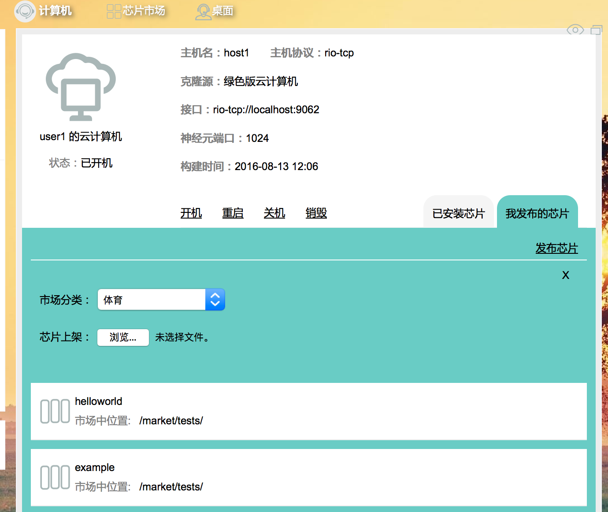
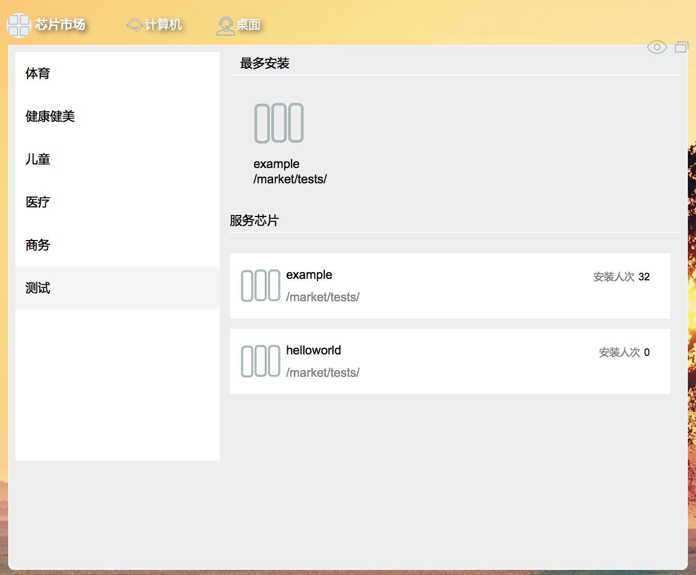
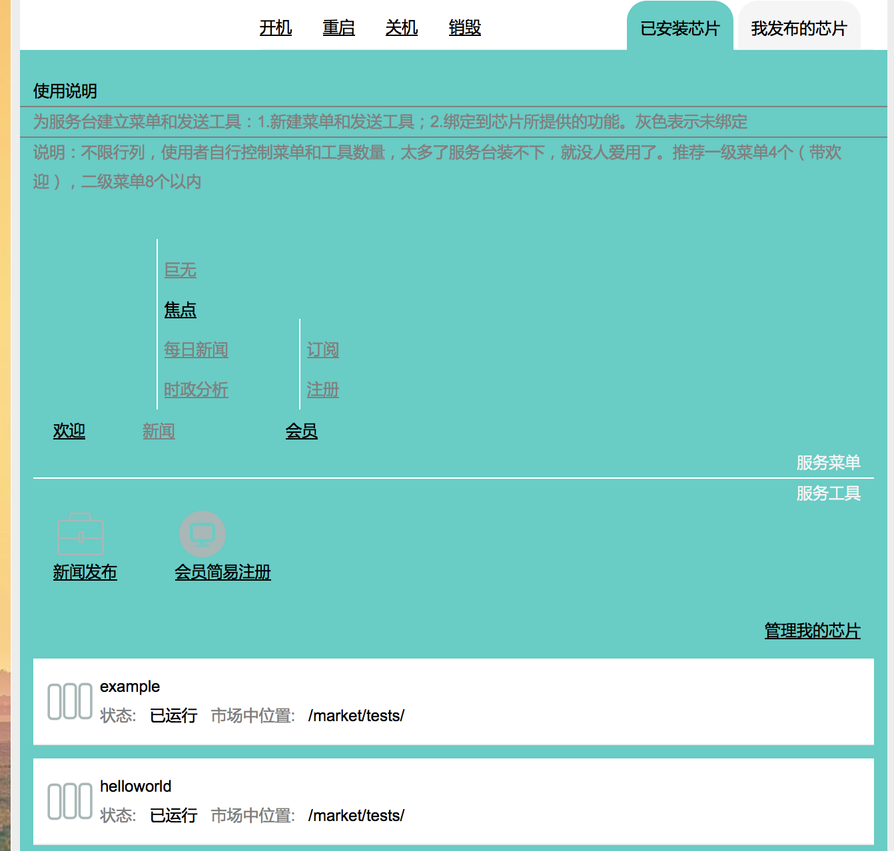
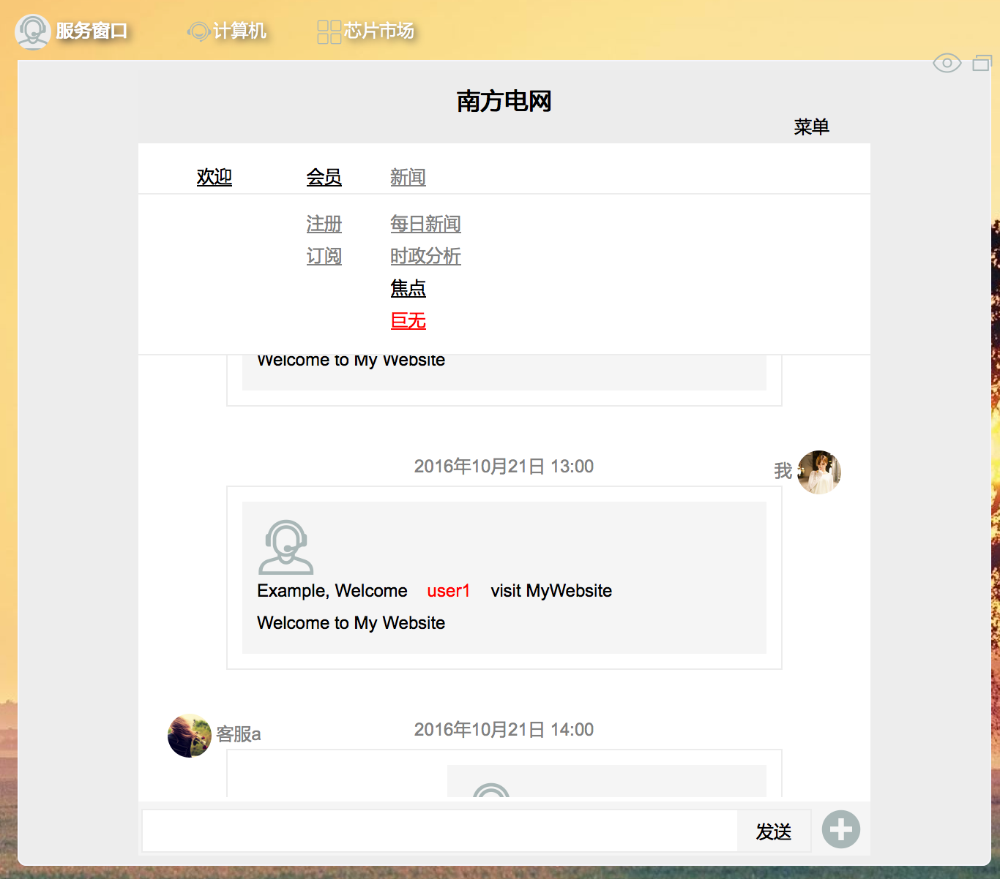

云计算机芯片发布流程
- 作者：cj (赵向彬)发布日期：2016年8月19日 21:15
关键词：神经元 神经网络
摘要：
发何发布云计算机芯片，并在服务窗口中验证
正文：
一、进入你的云计算机视窗，打开云计算机菜单，选择'我发布的芯片'选项卡（如果你不是开发者用户则无此选项卡），点发布芯片  上传后可在芯片市场中看到，也可在此界页中直接安装，我看下芯片市场  然后选择一个芯片就可安装了，安装后在我的计算机中就可以看到，如下图：  打开先前安装的芯片，运行它即可 二、服务窗口中的菜单和工具绑定，首先定义菜单和工具，参考上图： 为服务台建立菜单和发送工具：1.新建菜单和发送工具；2.绑定到芯片所提供的功能。灰色表示未绑定 说明：不限行列，使用者自行控制菜单和工具数量，太多了服务台装不下，就没人爱用了。推荐一级菜单4个（带欢迎），二级菜单8个以内 新建了工具和菜单之后即可绑定，如图：下拉列表中列出的就是芯片所提供的组件的名字，下面是在服务窗口中执行“巨无”菜单结果 